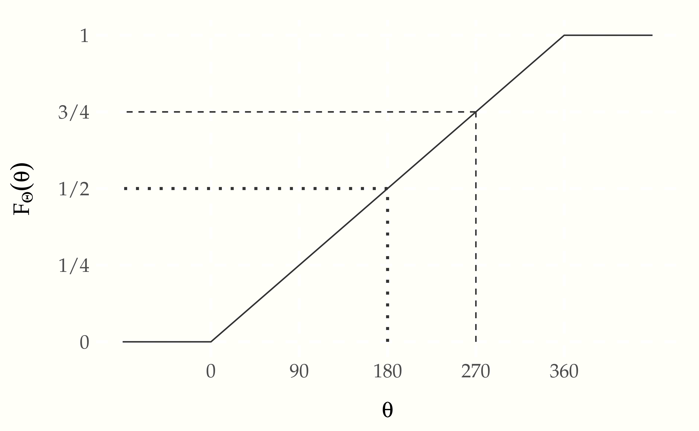
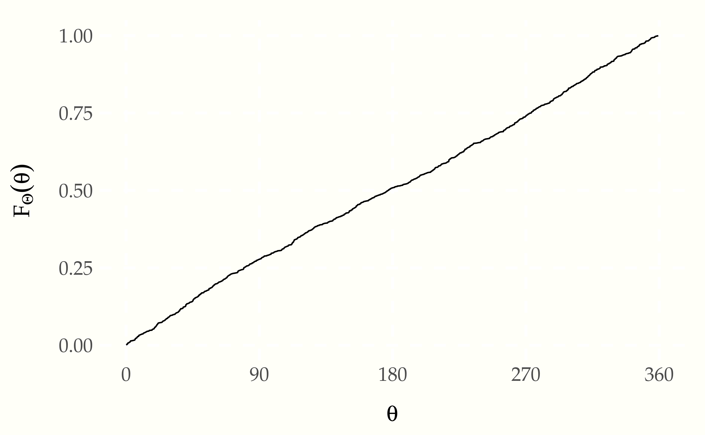
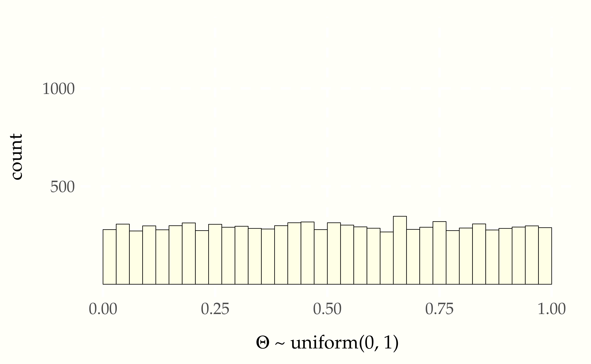
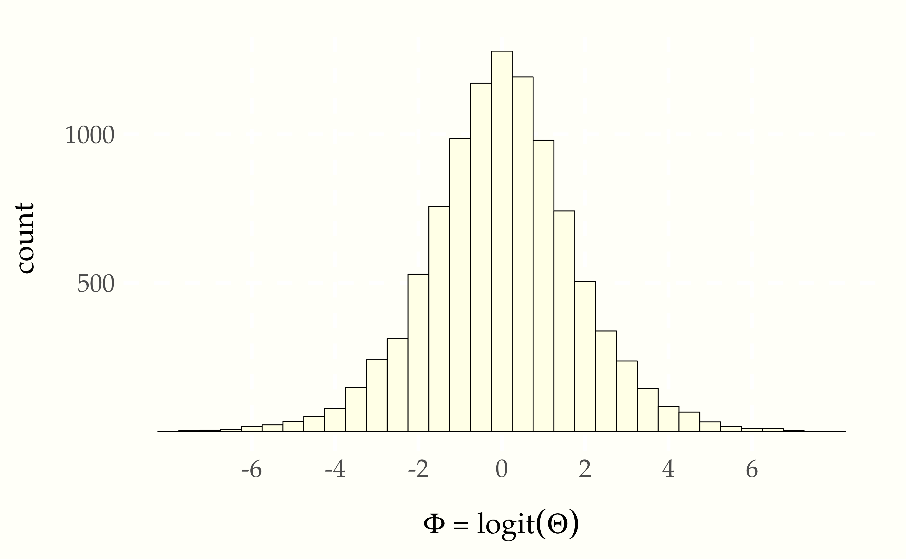
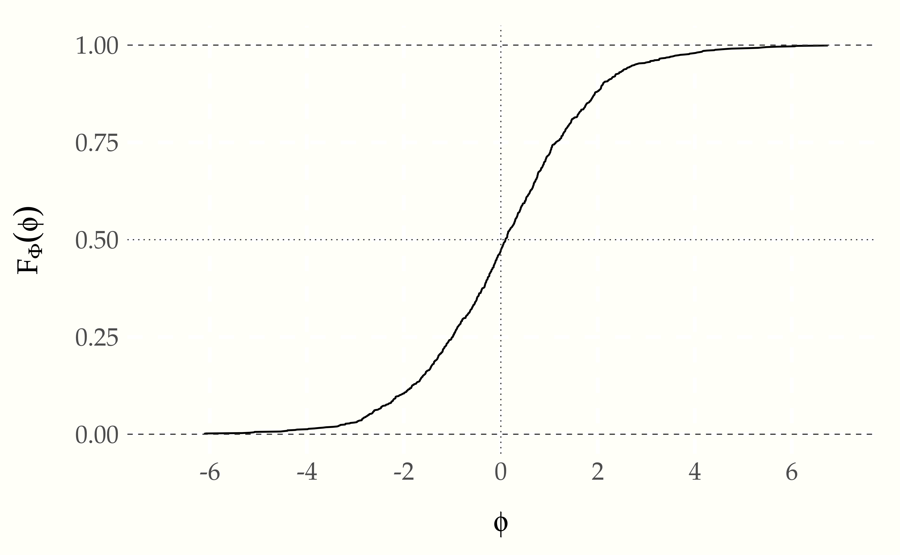
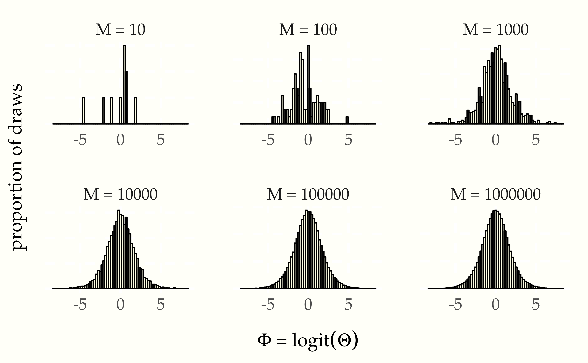
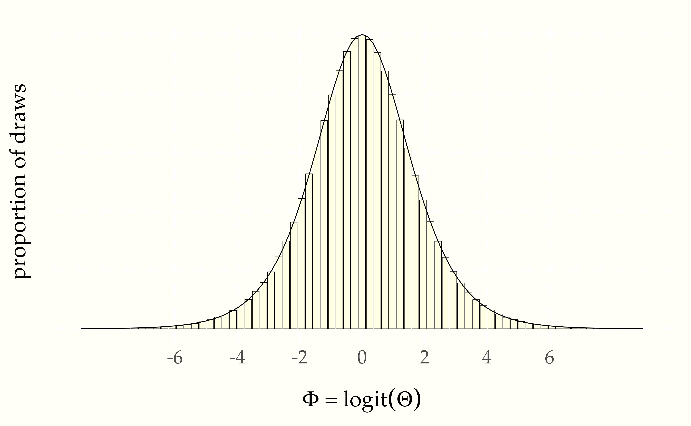
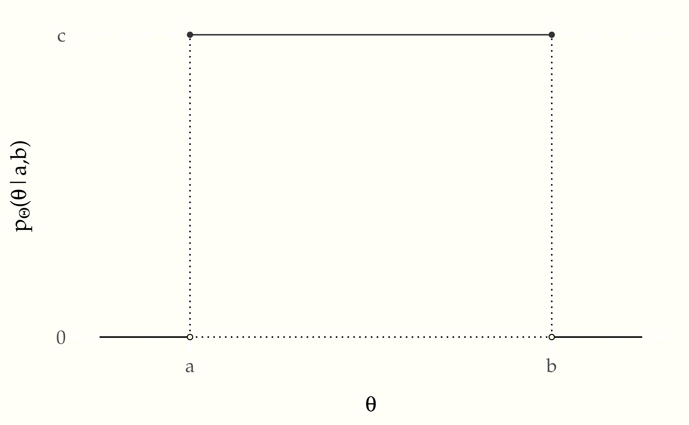

Suppose \(\Theta \sim \mbox{uniform}(0, 360)\) is the result of spinning a fair spinner. The cumulative distribtution function is defined exactly as for discrete random variables,100 Note that we have moved from Roman to Greek letters, but have kept to our capitalization convention for random variables—\(\Theta\) is the capitalized form of \(\theta\).
\[ F_{\Theta}(\theta) = \mbox{Pr}[\Theta \leq \theta]. \]
That is, it’s the probability the random variable is less than or equal to \(\theta\). In this case, because the spinner is assumed to be fair, the cumulative distribution function is
\[ F_{\Theta}(\theta) = \frac{\theta}{360}. \]
This is a linear function of \(\theta\), i.e., \(\frac{1}{360} \times \theta\), as is reflected in the following plot.
Figure 6.1: Cumulative distribution function for the angle \(\theta\) (in degrees) resulting from a fair spin of a spinner. The dotted line shows the value at 180 degrees, which is a probability of one half and the dashed line at 270 degrees, which is a probability of three quartersxs.
We can verify this result using simulation. To estimate cumulative distribution functions, we take \(M\) simulated values \(\theta^{(m)}\) and then sort them in ascending order.
for (m in 1:M)
theta[m] <- uniform_rng(0, 360)
theta_ascending <- sort(theta)
prob <- (1:M) / MThe expression (1:M) denotes the sequence \(1, 2, \ldots, M\), so that
(1:M) / M denotes \(\frac{1}{M}, \frac{2}{M}, \ldots, \frac{M}{M}\).
The trick is to put the sorted random variable the \(x\)-axis and the
probability values on the \(y\) axis. Here’s a run with \(M = 1\,000\)
simulated values.
Figure 6.2: Plot of the cumulative distribution function of a random variable \(\Theta\) representing the result of a fair spin of a spinner from 0 to 360 degrees. As expected, it is a simple linear function because the underlying variable \(\Theta\) has a uniform distribution.
Even with \(M = 1\,000\), this is pretty much indistinguishable from the one plotted analytically.
As with discrete parameters, the cumulative distribution function may be used to calculate interval probabilities, e.g.,101 With continuous variables, the interval probabilities are open below (\(180 \lt \Theta\)) and closed above (\(\Theta \leq 270\)), due to the definition of the cumulative distribution function as a closed upper bound (\(F_{\Theta}(\theta) = \mbox{Pr}[\Theta \leq \theta]\)).
\[ \begin{array}{rcl} \mbox{Pr}[180 < \Theta \leq 270] & = & \mbox{Pr}[\Theta \leq 270] \ - \ \mbox{Pr}[\Theta \leq 180] \\[2pt] & = & F_{\Theta}(270) - F_{\Theta}(180) \\[2pt] & = & \frac{3}{4} - \frac{1}{2} \\[2pt] & = & \frac{1}{4}. \end{array} \]
Now that we have seen how to generate uniform random numbers from 0 to 360, it is time to consider generating standard uniform variates from 0 to 1. Suppose \(\Theta\) is a random variable with a standard uniform distribution, i.e., \(\Theta \sim \mbox{uniform}(0, 1)\). Because probabilities are scaled from zero to one, we can think of \(\Theta\) as denoting a random probability.
Given a probability value \(\theta \in (0, 1)\), we can define its log odds by
\[ \mbox{logit}(\theta) = \log \frac{\theta}{1 - \theta}. \]
This is just the natural logarithm of the odds, \(\frac{\theta}{1 - \theta}\). Now let
\[ \Phi = \mbox{logit}(\Theta) \]
be the random variable representing the log odds. We say that \(\Phi\) is a transform of \(\Theta\), because its value is determined by the value of \(\Theta\).
Simulating transformed variables is straightforward.
for (m in 1:M)
theta[m] = uniform_rng(0, 1)
alpha[m] = logit(theta[m])
print 'alpha = ' alpha[1:10] ' ... 'We can run this and see the first ten values,
-2.05 0.50 0.44 0.50 1.82 0.58 -4.65 -1.19 0.69 0.06
...To understand the distribution of values of \(\Phi\), let’s look at histograms. First, we have the uniform draws of \(\Theta\),
Figure 6.3: Histogram of \(10\,000\) simulated draws of \(\Theta \sim \mbox{uniform}(0, 1)\).
and then the transform to log odds \(\Phi = \mathrm{logit}(\Theta)\),
Figure 6.4: Histogram of \(10\,000\) simulated draws of \(\Theta \sim \mbox{uniform}(0, 1)\) transformed to the log odds scale by \(\Phi = \mbox{logit}(\Theta).\)
Even though the probability variable \(\Theta \sim \mbox{uniform}(0, 1)\) is uniform by construction, the log odds variable \(\Phi = \mbox{logit}(\Theta)\) is not distributed uniformly.
A further feature of the log odds plot is that the distribution of values is symmetric around zero. Zero on the log odds scale corresponds to 0.5 on the probability scale,102 Recall that the inverse log odds function is defined by \[\mbox{logit}^{-1}(u) = \frac{1}{1 + \exp(-u)}.\] This function is called the logistic sigmoid in engineering circles. Inverses satisfy for \(u \in \mathbb{R}\), \[\mbox{logit}(\mbox{logit}^{-1}(u)) = u\] and \(v \in (0, 1)\), \[\mbox{logit}^{-1}(\mbox{logit}(v)) = v.\] i.e.,
\[ 0 = \mbox{logit}(0.5), \]
or equivalently,
\[ \mbox{logit}^{-1}(0) = 0.5. \]
Unboundedness and symmetry around zero make log odds quite convenient statistically and will resurface in categorical regressions.
The third relevant feature of the log odds plot is that almost all of the values are within \(\pm 6\) of the origin. This is not surprising given that we took \(10\,000\) draws and
\[ \mbox{logit}^{-1}(-6) = 0.0025 \]
and
\[ \mbox{logit}^{-1}(6) = 0.9975 \]
on the probability scale.
We can also do what we did for uniform distributions and plot the cumulative distribution based on simulation; we need merely insert the log-odds transform.
for (m in 1:M)
theta[m] <- logit(uniform_rng(0, 360))
theta_ascending <- sort(theta)
prob <- (1:M) / MWe again plot with \(M = 1\,000\) simulated values.
Figure 6.5: Plot of the cumulative distribution function of a random variable \(\Phi = \mbox{logit}(\Theta)\) representing the the log odds transform of a uniformly distributed random variable \(\Theta \sim \mbox{uniform}(0, 1)\). The curve it picks out is S-shaped. The asymptotes at 0 and 1 are indicated with dashed lines; the symmetries around 0 on the \(x\)-axis and 0.5 on the \(y\)-axis are picked out with dotted lines.
The result is an S-shaped function whose values lie between 0 and 1, with asymptotes at one as \(\theta\) approaches \(\infty\) and at zero as \(\theta\) approaches \(-\infty\). The argument of 0 has a value of 0.5.
The cumulative distribution function of this distribution is well known and has a closed analytic form based on the inverse of the log odds transform,
\[ F_{\Theta}(\theta) \ = \ \mathrm{logit}^{-1}(\theta) \ = \ \frac{1}{1 + \exp(-\theta)}. \]
The inverse log odds function is itself known as the logistic sigmoid function.103 A name presumably derived from its shape and the propensity of mathematicians, like doctors, to prefer Greek terminology—the Greek letter “\(\sigma\)” (sigma) corresponds to the Roman letter “S”.
Just as with discrete random variables, the expectation of a continuous random variable \(Y\) is defined as a weighted average of its values. Only this time, the weights are defined by the probability density function rather than by the probability mass function. Because \(Y\) takes on continuous values, we’ll need calculus to compute the weighted average.
\[ \mathbb{E}[Y] = \int_{-\infty}^{\infty} y \times p_Y(y) \, \mathrm{d}y. \]
Integrals of this general form should be read as a weighted average. It averages the value of \(y\) with weights equal to the density \(p_Y(y)\) of \(y\).104 Sometimes physicists will rearrange integral notation to reflect this and write \[\mathbb{E}[f(y)] = \int \mathrm{d}y \ p_Y(y) \times f(y)\] or even \[\mathbb{E}[f(y)] = \int p_Y(\mathrm{d}y) \times f(y).\]
Variances are calculated just as they were for discrete variables, as
\[ \mbox{var}[Y] \ = \ \mathbb{E}\left[ \left(Y - \mathbb{E}[Y]\right) \right]. \]
Let’s check this with some simulation by estimating the mean and variance of our running example. Suppose we have a a random variable \(\Phi = \mbox{logit}(\Theta)\), where \(\Theta \sim \mbox{uniform}(0, 1)\). We can estimate the expectation and variance of \(\Phi\) by simulating and calculating means and variances of the simulated values,
set.seed(1234)
phi <- rep(NA, M)
for (m in 1:M)
phi[m] = logit(uniform_rng(0, 1))
E_Phi = sum(phi) / M
var_Phi = sum((phi - E_Phi)^2) / M
print 'Estimated E[Phi] = ' E_Phi
'; var[Phi] = ' var_Phi
'; sd[Phi] = ' sqrt(var_Phi)Let’s run that for \(M = 1\,000\,000\) and see what we get.
Estimated E[Phi] = -0.00; var[Phi] = 3.30; sd[Phi] = 1.82The true value of the expectation \(\mathbb{E}[Y]\) is zero, and the true value of the variance is \(\frac{\pi^2}{3} \approx 3.29\).105 The true mean and variance for the logistic distribution can be calculated analytically. See the final section on this chapter for the analytic derivativation of the probability density function. The density must be integrated to analytically calcuate the mean and variance, though the result for the mean also arises from symmetry.
There is no equivalent of a probability mass function for continuous random variables. Instead, there is a probability density function, which in simulation terms may usefully be thought of as a limit of a histogram as the number of draws increases and the width of bins shrinks. Letting the number of simulations grow from \(10\) to \(1\,000\,000\), we see the limiting behavior of the histograms.
Figure 6.6: Histograms of \(M\) simulated draws of \(\Theta \sim \mbox{uniform}(0, 1)\) transformed to the log odds scale by \(\Phi = \mbox{logit}(\Theta).\) The limiting behavior is shown in the bell-shaped curve in the lower right based on \(1\,000\,000\) draws.
In a histogram, a bin’s height is proportional to the number of simulations that landed in that bin. Because each bin is the same width, a bin’s area (given by its width time its height) must also be proportional to the number of simulations that landed in that bin.
With simulation, the estimate of a probability landing in a bin is just the proportion of simulate values that land in the bin. Thus we can think of the area of a histogram’s bar as an estimate of the probability a value will fall in that bin.
Because the bins are exclusive (a number can’t fall in two bins), the probability of landing in either of two bins is proportional to the sum of their areas. This notion extends to intervals, where the estimated probability of the random variable falling between -2 and 2 is just the proportion of area between those two values in the histogram of simulations. Similarly, we can take a simulation-based estimate of \(\mbox{Pr}[\Theta \leq \theta]\) for any \(\theta\) as the proportion of simulated values that are less than or equal to \(\theta\). This is just the area to the left of the \(\theta\).
As the number of draws \(M\) increases, the estimated bin probabilities become closer and closer to the true values. Now we are going to look at the limiting continuous behavior. Put a point in the middle of the top of each histogram bar and connect them with lines. With a finite number of bins, that makes a jagged pointwise linear function. As the number of bins increases and the number of draws per bin increases, the function gets smoother and smoother. In the limit as \(M \rightarrow \infty\), it approaches a smooth function. That smooth function is called the probability density function of the random variable. Let’s see what that limiting function looks like with \(M = 1\,000\,000\) draws.
Figure 6.7: Histogram of \(M = 1\,000\,000\) simulations of \(\Theta \sim \mbox{uniform}(0,1)\) transformed to \(\Phi = \mbox{logit}(\Theta)\). The black line connects the tops of the histogram bins. In the limit, as the number of draws and bins approach infinity, the connecting line approaches the probability density function for the variable being simulated.
We have seen that the probability of a variable falling in an interval is estimated by proportion of the overall histogram area falls in the interval—that is, the sum of the histogram areas in the interval. What we want to do is let the number of bins and number of draws continue to increase to get ever better approximations. When we let the number of bins increase toward infinity, we have a familiar limit from integral calculus.
If \(p_Y(y)\) is the continuous density function we get as the limit of the histogram, then the probability that \(Y\) falls between \(a\) and \(b\) is given by the proportion of area between \(a\) and \(b\) in the function \(p_Y(y)\). This is the key insight for understanding density functions and continuous random variables. For bounded intervals, we have
\[ \mbox{Pr}[a \leq Y \leq b] \ \propto \ \int^b_a \ p_Y(y) \, \mathrm{d}y. \]
To make our lives easier and avoid writing the proportional-to symbol (\(\propto\)) everywhere, we will make the conventional assumption that our density functions like \(p_Y\) are normalized. This means that the total area under their curve is one,
\[ \int_{-\infty}^{\infty} p_Y(y) \, \mathrm{d}y \ = \ 1. \]
Because they are based on the limits of histograms, which are counts, we will also meet the standard requirement placed on density functions that they be positive, so that for all \(y \in \mathbb{R}\),
\[ p_Y(y) \geq 0. \]
With these assumptions in place, we now define interval probabilities using definite integration over density functions,
\[ \mbox{Pr}[a \leq Y \leq b] \ = \ \int^b_a \ p_Y(y) \, \mathrm{d}y. \]
For simple upper bounds, we just integrate from negative infinity,
\[ \mbox{Pr}[Y \leq b] \ = \ \int_{-\infty}^b \ p_Y(y) \, \mathrm{d}y. \]
This reveals the relation between the cumulative distribution function \(F_Y) = \mbox{Pr}[Y \leq b]\) and the probability density function \(p_Y\)
\[ F_Y(b) \ = \ \int_{-\infty}^b \ p_Y(y) \, \mathrm{d}y. \]
Working the other way around, it reveals that the probability density function is just the derivative of the cumulative distribution function,
\[ p_Y(b) = \frac{\mathrm{d}}{\mathrm{d}y} F_Y(y) \Bigg|_{y = b}. \]
Thus the units of a probability density function are change in cumulative probability, not probability. Density functions must be integrated to get back to units of probability.
We’ve already seen the histograms for variables \(\Theta \sim \mbox{uniform}(0, 1)\) distributed uniformly from zero to one. With an increasing numbers of draws, the histograms flatten out. With more draws the histograms will level out even more until the density becomes a straight line. This means that the probability density function of a uniformly distributed random variable is constant.106 Another way to reach the same conclusion is by calculus. We worked out from first principles that the cumulative distribution function is linear if uniformity means equal probability of landing in any interval of the same size. The derivative of a linear function is constant, so the density for a uniform distribution must be constant. That is, if \(\Theta \sim \mbox{uniform}(a, b)\), then \(p_{\Theta}(\theta) = c\) for some constant \(c\). Let’s see what that looks like so the solution for \(c\) becomes evident.

The plot shows the area from \(a\) to \(b\) under \(c\) to be \((b - a) \times c\). Given that we require the area to be one, that is, \((b - a) \times c = 1\), we can work out \(c\) by dividing both sides by \(b - a\),
\[ c = \frac{\displaystyle{1}}{\displaystyle b - a}. \]
Putting this into density notation, if \(\Theta \sim \mbox{uniform}(a, b)\), then
\[ p_{\Theta}(\theta) = \mbox{uniform}(\theta \mid a, b), \]
where we have now worked out that
\[ \mbox{uniform}(\theta \mid a, b) = \frac{1}{b - a}. \]
That is, the density does not depend on \(y\)—it is constant and the same for every possible value of \(\theta\).107 For convenience, we can assume the impossible values of \(\theta\) have density zero.
The traditional bottleneck to performing statistics beyond the data collection was wrangling integral calculus to provide analytic results or approximations for a given applied problem. Today, very general numerical solvers absolve us of the heavy lifting of calculus and replace it with wrangling computer code for simulations. This lets us solve much harder problems directly.
Let’s actually solve the integral we mentioned in the last section, namely the probabilty that a log odds variable will land between -2 and 2.
success = 0
for (m in 1:M)
Phi[m] = logit(uniform_rng(0, 1))
if (-2 < Phi[m] & Phi[m] < 2)
success += 1
print 'Pr[-2 < Phi < 2] = ' success / MLet’s run that for \(M = 100\,000\) simulation draws and see what we get,
Pr[-2 < Phi < 2] = 0.76What is perhaps more remarkable than not requiring calculus is that we don’t even require the formula for the density functin \(p_{\Phi}\)—we only need to be able to simulate random instantiations of the random variable in question.
Whether a random variable \(Y\) is continuous or discrete, its cumulative distribution function \(F_Y\) is defined by
\[ F_Y(y) = \mbox{Pr}[Y \leq y]. \]
Using simulation, if \(Y\) is a continuous random variable, its probability density function \(p_Y\) is the limit of the histogram of simulation draws. Using calculus, the density \(p_Y\) of a continuous random variable \(Y\) is defined as the derivative of the cumulative distribution function \(F_Y\),108 Differential notation avoids the fiddly notation arising from bound vaiables, e.g., \[p_Y(y) \ = \ \frac{\mathrm{d}}{\mathrm{d}y} F_Y(y).\] With multivariate functions, the derivative operator is replaced with the gradient operator \(\nabla.\)
\[ p_Y = \mathrm{d} F_Y. \]
Joint cumulative distibution functions for a pair of continuous random variables \(X, Y\) are defined as expected,
\[ F_{X, Y}(x, y) = \mbox{Pr}[X \leq x \ \mbox{and} \ Y \leq y], \]
and may be easily extended to more variables. With simulation, cumulative distribution functions may be recreated by sorting the simulated values and normalizing.
Joint densities for a pair \(X, Y\) of continuous random variables are defined by differentiating the joint cumulative distribution twice,109 With bound variables, \[p_{X, Y}(x, y) = \frac{\partial^2}{\partial x \partial y} F_{X, Y}(x, y).\]
\[ p_{X, Y} = \mathrm{\partial^2} F_{X, Y}. \]
Marginal densities \(p_X\) may now be defined in terms of the joint density \(p_{X, Y}\) by integration,110 If we had a convenient integral operator, we could avoid the bound variable fiddling. As written, in the traditional style, it is muddied that the integral just averages over \(y\) treating \(x\) as a variable bound by the function definition notation.
\[ p_X(x) = \int_{-\infty}^{\infty} p_{X, Y}(x, y) \, \mathrm{d}y. \]
With simulation, if we can simulate \(x^{(m)}, y^{(m)}\) jointly, then we can simulate \(x^{(m)}\) by simply dropping \(y^{(m)}\).
If we can simulate from \(Y\), we can compute \(p_X(x)\) for a given value of \(x\) by averaging,
\[ p_X(x) \ \approx \ \frac{1}{M} \sum_{m \in 1:M} p_{X,Y}(x, y^{(m)}). \]
Conditional densities \(p_{X \mid Y}\) are defined by dividing the joint density \(p_{X, Y}\) by the marginal density \(p_{X}\),
\[ p_{X \mid Y}(x \mid y) \ = \ \frac{\displaystyle p_{X, Y}(x, y)} {p_Y(y)}. \]
Conditional densities \(p_{X \mid Y}(x \mid y)\) may be handled by simulation for specific values of \(y\).
Equivalently, we can see this as a definition of the joint density in terms of the conditional and marginal,
\[ p_{X, Y}(x, y) \ = \ p_{X \mid Y}(x \mid y) \times p_Y(y). \]
With simulation, this is often the strategy to generate simulations from the joint distribution—first simulate from \(Y\), then simulate \(X\) given \(Y\).
A convenient form of marginalization uses this definition,
\[ p_X(x) = \int_{-\infty}^{\infty} p_{X \mid Y}(x, y) \times p_Y(y) \, \mathrm{d} y. \]
Continuous random variables \(X\) and \(Y\) are independent if their densities factor, so that for all \(x, y\),
\[ p_{X, Y}(x, y) \ = \ p_X(x) \times p_Y(y), \]
or equivalently,
\[ p_{X \mid Y}(x \mid y) \ = \ p_X(x). \]
Expectations for continuous random variables are defined using integration to calculate the average of \(y\) weighted by the density \(p_Y(y)\),
\[ \mathbb{E}[Y] \ = \ \int_{-\infty}^{\infty} y \times p_Y(y) \, \mathrm{d}y. \]
In moving from discrete to continuous variables, we have merely switched the definition from summation to integration. Luckily, calculation by simulation need not change—we will still be calculating expectations by averaging over simulated values. If we can simulate \(y^{(m)}\) according to \(p_Y(y)\) for \(m \in 1:M\), our simulation-based estimate is
\[ \mathbb{E}[f(y)] \ \approx \ \frac{1}{M} \sum_{m = 1}^M f \! \left( y^{(m)} \right). \]
This estimate becomes exact as \(M \rightarrow \infty\).
Variances are defined in terms of expectation, just as before,
\[ \mbox{var}[Y] \ = \ \mathbb{E}\left[ \left( Y - \mathbb{E}[Y] \right)^2 \right] \ = \ \mathbb{E}[Y^2] - \left( \mathbb{E}[Y] \right)^2. \]
Variances can be estimated through simulation like any other expectation.111 The sample variance computed by standard software divides by \(M - 1\) to correct for the bias introduced by using the sample mean to estimate variance. The maximum likelihood estimate resulting from dividing by \(M\) is biased to underestimate variance with finite samples; asymptotically, it provides the correct result, because the \(\frac{M}{M-1}\) correction factor approaches one as as \(M\) increases.
When we moved from a random variable \(\Theta \sim \mbox{uniform}(0, 1)\) to a variable \(\Phi = \mbox{logit}(\Theta)\), we made a class change of variables. That means we can use calculus to compute the probability density function. But let’s do it in full generality.
We’ll start by assuming we have a random variable \(X\) with a known density function \(p_X(x)\). Assume further we have a smooth and invertible function \(f\) and define a new random variable \(Y = f(X)\). The density of \(Y\) is then given by the rather daunting formula
\[ p_Y(y) \ = \ p_X(f^{-1}(y)) \, \times \, \left| \, \frac{\mathrm{d}} {\mathrm{d}u} f^{-1}(u) \Big|_{u = y} \, \right|. \]
We’re going to work through this in pieces using our running example. To keep the puzzle pieces straight, let \(X = \Theta \sim \mbox{uniform}(0, 1)\) be our uniform probability variable and \(Y = \Phi = \mbox{logit}(\Theta)\) be the transformed variable on the log odds scale. Our goal is to calculate the density of \(\Phi\) given that we know the density of \(\Theta\) and the transform from \(\Theta\) to \(\Phi\). We begin by noting that
\[ \mbox{logit}^{-1}(y) = \frac{1}{1 + \exp(-y)}. \]
So to evaluate \(p_{\Phi}(\phi)\), we first need to evaluate \(p_{\Theta}(\mbox{logit}^{-1}(\phi))\). We know this term will evaluate to 1, because \(p_{\Theta}(\theta) = 1\) for every \(\theta\). So clearly just inverting and plugging in isn’t enough.
We also need to account for the change in variables from \(\Theta\) to \(\Phi\). This is where the Jacobian term comes into the equation—that’s everything past the \(\times\) sign. The Jacobian is the absolute value of the derivative of the inverse transform evaluated at the value in question. For our running example, we can work out through the chain rule that
\[ \frac{\mathrm{d}}{\mathrm{d} u} \mbox{logit}^{-1}(u) \ = \ \mbox{logit}^{-1}(u) \times \left(1 - \mbox{logit}^{-1}(u)\right). \]
So if we plug in \(u = \phi\) here, and put all the pieces back together, we get
\[ p_{\Phi}(\phi) \ = \ \mbox{logit}^{-1}(\phi) \times \left( 1 - \mbox{logit}^{-1}(\phi) \right). \]
This distribution is known as the standard logistic distribution,
\[ \mbox{logistic}(\phi \mid 0, 1) \ = \ \mbox{logit}^{-1}(\phi) \times \left( 1 - \mbox{logit}^{-1}(\phi) \right). \]
Thus after all the dust has settled, we know that if \(\Theta \sim \mbox{uniform}(0, 1)\) and \(\Phi = \mbox{logit}(\Theta)\), then \(\Phi \sim \mbox{logistic}(0, 1)\).112 The meaning of the parameters 0 and 1 will be explained in the next section.